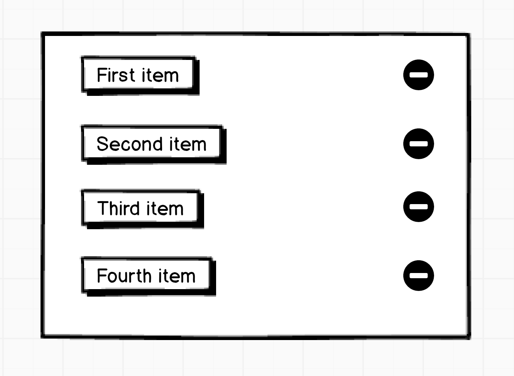

Code
Previously, we looked at the dominoes from 60,000 feet. We will now shift down to 30,000 feet and look in more detail, this time with code fragments.

The Setup¶
Imagine this: our app displays a list of items.
The user clicks the "delete" button next to the 3rd item in the list.
In response, let's track what happens within our imaginary re-frame app? Let's manually step through the resulting six domino cascade.
Don't expect to completely grok the terse code presented below. We're still at 30,000 feet. More details later.
Domino 1¶
In order for it to be clicked, that 3rd delete button must have already been rendered. And rendering
in re-frame is done by a ViewFunction. Perhaps it was rendered like this:
(defn delete-button
[item-id]
[:div.garbage-bin
:on-click #(re-frame.core/dispatch [:delete-item item-id])])
It is that on-click handler (function) which interests us. When the user clicks on the garbage-bin icon, that function is called.
#(re-frame.core/dispatch [:delete-item item-id])
This function calls re-frame's dispatch to emit an event.
Every re-frame event is a vector and, in this case, the dispatched event has two elements:
[:delete-item 2486]
where 2486 is an id I just made up for that 3rd item.
The first element of an event vector,
:delete-item, is the kind of event. The rest is optional data, salient to the
event.
Events express user intent in a domain-specific way. They are the language of your re-frame system.
Domino 2¶
An event handler (function), which we'll name h, is now called to
compute the effect of the event [:delete-item 2486].
On startup, re-frame apps register handlers for events using reg-event-fx. So,
in our imaginary app, because h is the handler function for :delete-item events,
it would have been registered like this:
(re-frame.core/reg-event-fx ;; a part of the re-frame API
:delete-item ;; the kind of event
h) ;; the handler function for this kind of event
Because h is an event handler, it will be written to take two arguments:
- a
coeffectsmap which contains the current state of the world (including app state) - the
eventto handle
It is the job of h to compute how the world should be changed by the event, and
it returns a map of effects which describe those changes. Effects as data.
Here's a sketch (we are at 30,000 feet):
(defn h ;; maybe choose a better name like `delete-item`
[coeffects event] ;; `coeffects` holds the current state of the world
(let [item-id (second event) ;; extract id from event vector
db (:db coeffects)] ;; extract the current application state
{:db (dissoc-in db [:items item-id])})) ;; effect is "change app state to ..."
re-frame has ways (described in later tutorials) to inject necessary aspects
of "the world" into that first coeffects argument (map). Different
event handlers need to know different "things" about the world to get their job done. But
current "application state" is one aspect of the world which is
invariably needed, and it is available by default in the :db key.
In this case, the value returned by h is a map with only one key:
{:db ..some-value..}
This is h saying "a change to application state is required".
BTW, here is a more idiomatic rewrite of h which uses destructuring of the args:
(defn h
[{:keys [db]} [_ item-id]] ;; <--- new: obtain db and item-id directly
{:db (dissoc-in db [:items item-id])}) ;; same as before
Domino 3¶
An effect handler (function) actions the effects returned by h.
In domino 2, h returned this data:
{:db (dissoc-in db [:items 2486])} ;; db is a map of some structure
Each key of the map identifies one kind
of effect, and the value for that key supplies further details.
The map returned by h only has one key, so there's only one effect.
A key of :db means to update the app state with the associated value.
This update of "app state" is a mutative step, facilitated by re-frame
which has a built-in effects handler for the :db effect.
Why the name :db? Well, re-frame sees "app state" as something of an in-memory
database. More on this in a following tutorial.
Just to be clear, if h had returned:
{:wear {:pants "velour flares" :belt false}
:tweet "Okay, yes, I am Satoshi. #coverblown"}
Then, the two effects handlers registered for :wear and :tweet would
be called to action those two effects. And, no, re-frame
does not supply standard effect handlers for either, so you would have had
to have written them yourself (see how in a later tutorial).
Domino 4¶
We now start the v = f(s) part of the flow.
The application state
s has just changed (in Domino 3) and now boom, boom go Dominoes 4, 5,
and 6, at the end of which we have a new view, v, being shown to the user.
In this domino 4, a query (function) over this app state is automatically called. This query function "extracts" data from application state, and then computes "a materialised view" of the application state - producing data which is useful to the view functions in domino, 5.
Now, in this particular case, the query function is pretty trivial. Because the items are stored in app state, there's not a lot to compute and, instead, it acts like a simple extractor or accessor, just plucking the list of items out of application state:
(defn query-fn
[db v] ;; db is the current app state, v the query vector
(:items db)) ;; not much of a materialised view
On program startup, such a query-fn must be associated with a query-id,
(so it can be used via subscribe in domino 5) using re-frame.core/reg-sub,
like this:
(re-frame.core/reg-sub ;; part of the re-frame API
:query-items ;; query id
query-fn) ;; query fn
Which says "if, in domino 5, you see a (subscribe [:query-items]), then
use query-fn to compute it".
Domino 5¶
Because the query function for :query-items just re-computed a new value,
any view (function) which uses a (subscribe [:query-items])
is called automatically (reactively) to re-compute new DOM (in response to a change in its source data).
View functions compute a data structure, in hiccup format, describing the DOM nodes required. In this "items" case, the view functions will not be generating hiccup for the just-deleted item obviously but, other than this, the hiccup computed "this time" will be the same as "last time".
(defn items-view
[]
(let [items (subscribe [:query-items])] ;; source items from app state
[:div (map item-render @items)])) ;; assume item-render already written
Notice how items is "sourced" from "app state" via re-frame.core/subscribe.
It is called with a vector argument, and the first element of that vector is
a query-id which identifies the "materialised view" required by the view.
Note: subscribe queries can be parameterised. So, in real-world apps
you might have this:
(subscribe [:items "blue"])
The vector identifies, first, the query, and then
supplies further arguments. You could think of that as
representing select * from Items where colour="blue".
Except there's no SQL available and you would be the one to implement
the more sophisticated query-fn capable of handling the
"where" argument. More in later tutorials.
Domino 6¶
The hiccup returned by the view function is made into real browser DOM by Reagent/React. No code from you required. Just happens.
The DOM computed "this time" will be the same as "last time", except for the absence of DOM for the deleted item, so the mutation will be to remove those now-missing DOM nodes from the browser.
3-4-5-6 Summary¶
The key point to understand about our 3-4-5-6 example is:
- a change to app state ...
- triggers query functions to rerun ...
- which triggers view functions to rerun
- which causes modified browser DOM
Boom, boom, boom go the dominoes. It is a reactive data flow.
Aaaaand we're done¶
At this point, the re-frame app returns to a quiescent state, waiting for the next event.
Two Sub-Cascades¶
You might have noticed that there's actually two sub-cascades 1-2-3 and 4-5-6, and they have a similar structure.
In each, it is the second to last domino which computes "data descriptions" of the changes required, and it is the last domino which does the dirty work and actions these descriptions.
But you seldom need to worry yourself about the dirty work dominos. re-frame mostly takes care of them for you.
One is only fruitful at the price of being rich in oppositions
-- Nietzsche, Twilight of the Idols
Pragmatically, in functional systems, the most interesting part is how and when you arrange to not be pure.